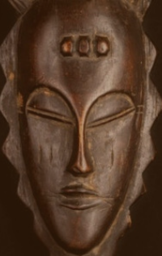
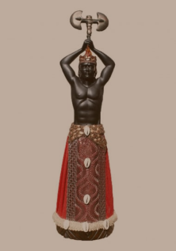
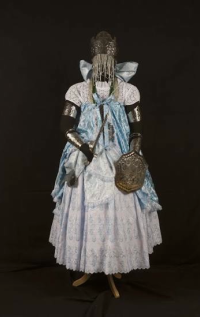
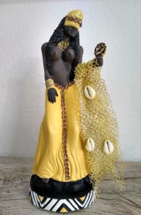
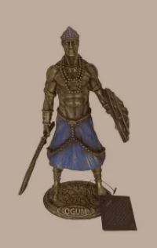
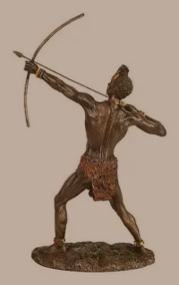

Povos Iorubás — África Ocidental
Os Iorubás são um dos principais grupos étnicos da África
Ocidental, principalmente na Nigéria, mas também presentes no
Benim, Togo e Gana. Sua cultura possui milhares de anos de
história e teve grande influência no Brasil.
Os Iorubás se estabeleceram ao sul do Rio Níger e desenvolveram
importantes cidades, como Ilê-Ifé. Com o tempo, formaram reinos
como Ifé e Oió, que se tornou uma importante potência política e
militar da região
Religião e Cultura
A religião tradicional iorubá possui diversos orixás, relacionados a diferentes forças e aspectos da vida.
Entre esses aspectos:
-

Olodumarê
Criador do universo
-

Xangô
Ligado a trovão, fogo e justiça
-

Iemanjá
Ligado a águas doces
-

Oxum
Ligado a rios e lagos
-

Ogum
Ligado ao ferro e à guerra
-

Oxóssi
Ligada a caças e florestas
A cultura iorubá se destaca pela arte, música, dança, escultura,
metalurgia e tradição oral. Os Iorubás desenvolveram técnicas com
ferro, bronze e latão e transmitiam histórias e conhecimentos
principalmente por meio da oralidade.
A língua iorubá pertence ao grupo nigero-congolês. Durante a
diáspora africana, sua língua e cultura chegaram às Américas e
deixaram importantes marcas no Brasil, inclusive em palavras como
acarajé, fubá e jabá.
Curiosidades:
Ilê-Ifé é considerada um dos grandes centros históricos e culturais dos Iorubás. A cidade ficou especialmente conhecida por sua produção artística, com esculturas e cabeças feitas em bronze, latão e terracota, que apresentam grande riqueza de detalhes e mostram o alto nível técnico dos artistas da região.